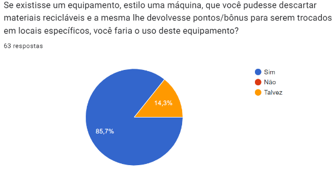

RESULTADOS
A reciclagem é de extrema importância por diversos fatores, como sua ajuda na conservação de recursos naturais como madeira, água e minerais, na diminuição dos custos com a limpeza urbana, contribui para redução de desastres ambientais, como enchentes, contaminação de rios e mais, a reciclagem também evita a poluição, reduzindo gases de efeito estufa, para assim manter o ambiente sustentável para gerações futuras. O papel que o processo da reciclagem desencadeia é o favorecimento de uma atividade rentável, gerando assim novos empregos.
Por esse e mais fatores, a reciclagem é de grande importância, e a prática deve aumentar já, mas por que as pessoas já não reciclam? Pois nós vivemos em uma sociedade em que a influência é maior se as pessoas são retribuídas de alguma forma. Ao saber disso a solução que desejamos trazer para a sociedade, onde há a junção da reciclagem e do benefício ao consumidor final, por meio de descontos, seria uma ótima saída para a falta da reciclagem. O próximo passo que iremos realizar é uma entrevista com lojistas, onde faremos perguntas, buscando possíveis investidores.

Outra pergunta realizada foi: Se existisse esta máquina, que recebesse os produtos a serem reciclados e lhe desse algum benefício, o que não poderia faltar? Escreva um pouco sobre.
Onde uma das respostas obtidas por um dos respondentes foi a seguinte, “Seria interessante que estas máquinas tivessem diversos bairros e que fossem bem centrais para que todos tivessem acesso. O benefício poderia ser através de descontos no IPTU ou em supermercados por exemplo. E só o fato de mais pessoas estarem reciclando já seria um grande benefício para todos nós.” E com isso, reforçamos a localização da máquina, para assim fácil acesso de todos, sua localização seria em shoppings e locais movimentados seguros, os descontos poderiam ser obtidos em supermercados, farmácias, entre outros, para assim maior prática da reciclagem.
Voltar